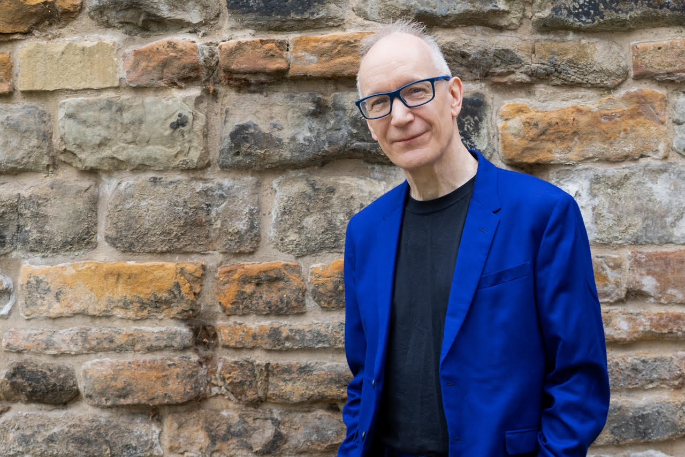
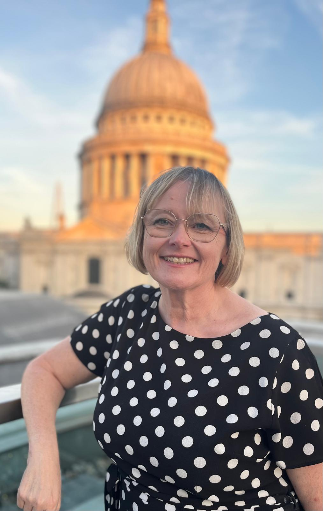

History
The TechCon conference has been run by different groups during its history.
Previously it was organised as part of the UK Radio Festival, under The Radio
Academy. Since 2016 it has been run independently by TBC Media Ltd. due to limited
resources at The Radio Academy
TBC Media Ltd. is run by Ann Charles and Aradhna Tayal, who are former committee members of TechCon
from its Radio Festival days. TBC Media Ltd. exists to support the UK radio and audio industry by
running events to support the technical community, most notably Radio TechCon.
Mission
TechCon’s mission is to accelerate Africa’s digital transformation by creating a
platform where stakeholders from various industries can learn, collaborate, and
innovate using emerging technologies.
Past Speakers
Our Radio TechCon speakers share their skills and passions
with you in the Turing Theatre. Find out all about them, here.
David Lloyd – Radio TechCon Host
Former commercial radio executive turned radio consultant, historian and broadcaster,
David has been in radio for over forty
years, running stations of all formats from Galaxy to Century, LBC to Virgin.

Angie Avilanos – Manager, BFBS Live Events
Angie’s been staging live shows for British forces for over two decades — usually
somewhere hot, cold, or just plain inhospitable.
After 10 years at the BBC, she swapped studios for sandbags and hasn’t looked back (well, maybe once
or twice). Nothing makes her happier than seeing a crowd forget where they are — even if it’s in
the middle of a desert, muddy field, or concrete jetty.
